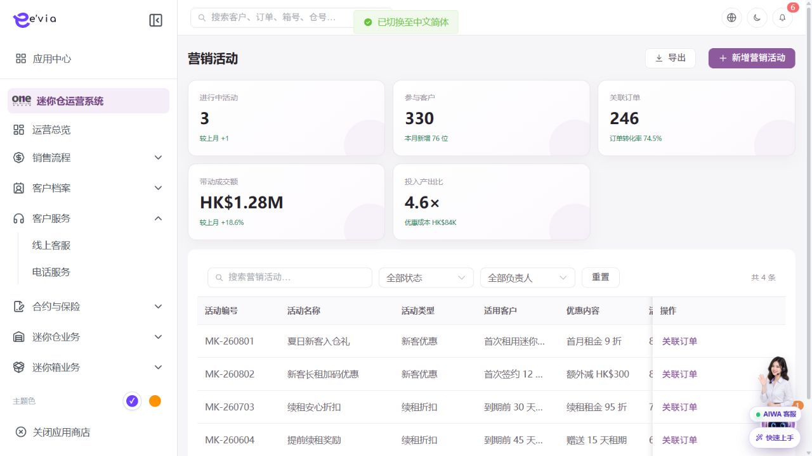
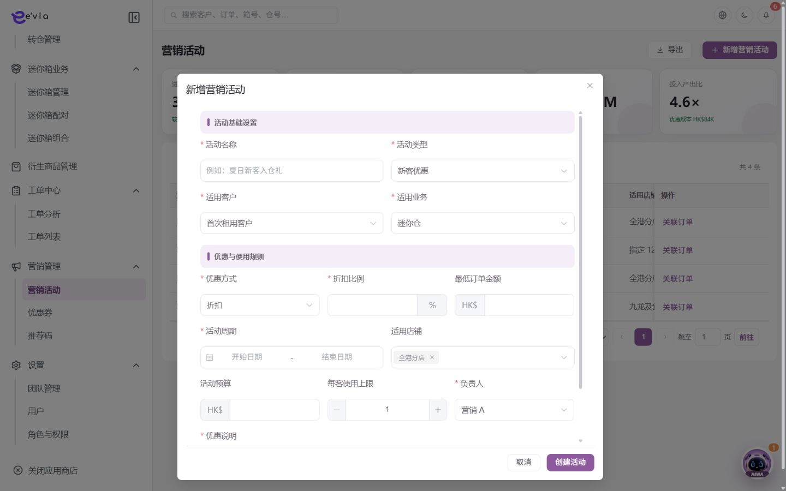

营销活动管理 PRD
下载 Word 文档营销活动管理 PRD
运营后台研发详细需求规格 · V2.5 · 2026-09-09
1 文档目标与范围
配置营销活动的人群、优惠、店铺、周期、预算和参与限制，并追踪关联订单。 本文档明确页面字段、操作流程、业务规则、跨端契约、权限和验收条件。
| 属性 | 内容 |
|---|---|
| 文档编号 | OS-OPS-PRD-24 |
| 产品基线 | AiwaBot产品原型 V3.2 与 OneStorage运营后台原型 V1.1 |
| 版本 | V2.5 2026-09-09 |
1.1 原型界面依据
本模块界面直接取自 AiwaBot产品原型-v3.2.html。真实截图及功能点对应说明见“界面与功能对应说明”。
2 界面与页面结构
2.1 界面与功能对应说明
以下真实原型截图用于确定页面区域、入口和交互位置；字段校验、状态变化和服务端处理以本PRD功能规格为准。

| 说明项 | 界面辅助说明 |
|---|---|
| 对应功能点 | OS-OPS-PRD-24-FP02 提交审核；OS-OPS-PRD-24-FP03 发布；OS-OPS-PRD-24-FP04 暂停或终止；OS-OPS-PRD-24-FP05 查看关联订单 |
| 页面区域 | 配置页包含条件筛选、配置列表、启停或发布状态以及新增、编辑、查看等管理入口。 |
| 交互要求 | 编辑使用版本控制；启停、发布和权限变更需要确认并记录审计，已被业务引用的数据不得物理删除。 |
| 状态与权限 | 动作由allowedActions控制；无权限隐藏入口，接口仍执行403校验并记录审计。 |

| 说明项 | 界面辅助说明 |
|---|---|
| 对应功能点 | OS-OPS-PRD-24-FP01 新增活动 |
| 页面区域 | 新增界面按业务分组展示表单字段、关联对象选择、保存与取消操作。 |
| 交互要求 | 必填和格式错误在字段下方提示；关联对象实时校验；保存期间按钮防重复，关闭已修改表单需二次确认。 |
| 状态与权限 | 动作由allowedActions控制；无权限隐藏入口，接口仍执行403校验并记录审计。 |
2.3 筛选条件
| 筛选项 | 规则 |
|---|---|
| 活动编号或名称 | 支持组合查询、重置和返回保留。 |
| 活动类型 | 支持组合查询、重置和返回保留。 |
| 状态 | 支持组合查询、重置和返回保留。 |
| 适用店铺 | 支持组合查询、重置和返回保留。 |
| 活动周期 | 支持组合查询、重置和返回保留。 |
3 列表字段规格
>| 字段ID | 字段 | 来源 | 展示与交互规则 |
|---|---|---|---|
| OS-OPS-PRD-24-L01 | 活动编号 | 服务端主键或业务编号 | 完整展示并支持复制；唯一且不可使用展示名称代替。 |
| OS-OPS-PRD-24-L02 | 活动名称 | 业务主域 | 详情与导出保持一致；空值显示—，不使用模拟值补齐。 |
| OS-OPS-PRD-24-L03 | 活动类型 | 业务主域 | 详情与导出保持一致；空值显示—，不使用模拟值补齐。 |
| OS-OPS-PRD-24-L04 | 适用客户 | 业务主域 | 详情与导出保持一致；空值显示—，不使用模拟值补齐。 |
| OS-OPS-PRD-24-L05 | 优惠内容 | 财务或报价主域 | 显示币种和两位小数；不得用格式化字符串参与计算。 |
| OS-OPS-PRD-24-L06 | 活动周期 | 服务端时间 | 按Asia/Hong_Kong显示；空值显示—，排序使用原始时间。 |
| OS-OPS-PRD-24-L07 | 适用店铺 | 组织或门店主数据 | 显示名称并保留ID；数据范围变化后重新校验。 |
| OS-OPS-PRD-24-L08 | 参与次数 | 业务主域 | 详情与导出保持一致；空值显示—，不使用模拟值补齐。 |
| OS-OPS-PRD-24-L09 | 操作人 | 服务端/关联主数据 | 记录最近一次有效业务操作人员。 |
| OS-OPS-PRD-24-L10 | 更新时间 | 服务端/关联主数据 | 服务器更新时间，格式YYYY-MM-DD HH:mm:ss。 |
| OS-OPS-PRD-24-L11 | 状态 | 服务端/关联主数据 | 以标签显示服务端枚举；不可由前端自行推导。 |
| OS-OPS-PRD-24-L12 | 关联订单 | 服务端/关联主数据 | 显示订单编号并支持在有权限时跳转。 |
| OS-OPS-PRD-24-L13 | 操作 | 服务端/关联主数据 | 根据allowedActions显示查看、编辑及状态动作；后端再次鉴权。 |
4 新增与编辑表单
| 字段ID | 字段 | 控件 | 必填 | 校验与保存规则 |
|---|---|---|---|---|
| OS-OPS-PRD-24-F01 | 活动名称 | 文本框 | 条件必填 | 去除首尾空格；保存原始值与标准化值。 |
| OS-OPS-PRD-24-F02 | 活动类型 | 单选或下拉选择 | 必填 | 选项来自服务端字典；提交编码值，界面显示名称。 |
| OS-OPS-PRD-24-F03 | 适用客户 | 文本框 | 条件必填 | 去除首尾空格；保存原始值与标准化值。 |
| OS-OPS-PRD-24-F04 | 排除客户 | 文本框 | 条件必填 | 去除首尾空格；保存原始值与标准化值。 |
| OS-OPS-PRD-24-F05 | 优惠方式 | 单选或下拉选择 | 必填 | 选项来自服务端字典；提交编码值，界面显示名称。 |
| OS-OPS-PRD-24-F06 | 优惠金额或折扣 | 金额输入 | 条件必填 | 输入大于等于0，最多两位小数；服务端以最小货币单位重算。 |
| OS-OPS-PRD-24-F07 | 最高优惠 | 文本框 | 条件必填 | 去除首尾空格；保存原始值与标准化值。 |
| OS-OPS-PRD-24-F08 | 适用业务 | 文本框 | 条件必填 | 去除首尾空格；保存原始值与标准化值。 |
| OS-OPS-PRD-24-F09 | 适用店铺 | 单选或下拉选择 | 必填 | 选项来自服务端字典；提交编码值，界面显示名称。 |
| OS-OPS-PRD-24-F10 | 开始时间 | 日期或日期时间 | 必填 | 服务端校验起止顺序、营业日和截止规则。 |
| OS-OPS-PRD-24-F11 | 结束时间 | 日期或日期时间 | 必填 | 服务端校验起止顺序、营业日和截止规则。 |
| OS-OPS-PRD-24-F12 | 总预算 | 金额输入 | 条件必填 | 输入大于等于0，最多两位小数；服务端以最小货币单位重算。 |
| OS-OPS-PRD-24-F13 | 参与上限 | 数字输入 | 条件必填 | 仅允许业务配置范围内的整数；服务端再次校验。 |
| OS-OPS-PRD-24-F14 | 每人上限 | 数字输入 | 条件必填 | 仅允许业务配置范围内的整数；服务端再次校验。 |
| OS-OPS-PRD-24-F15 | 叠加规则 | 文本框 | 条件必填 | 去除首尾空格；保存原始值与标准化值。 |
| OS-OPS-PRD-24-F16 | 审核人 | 文本框 | 条件必填 | 去除首尾空格；保存原始值与标准化值。 |
| OS-OPS-PRD-24-F17 | 活动说明 | 多行文本 | 条件必填 | 最多500字；拒绝或异常原因不得只输入空白。 |
4.1 详情入口与页面容器
从列表查看入口、业务编号链接或关联对象深链打开详情。界面依据原型真实截图“营销活动管理列表”；原型没有独立详情画面时不使用示例图，按现有列表视觉体系实现。
| 界面状态 | 完整处理规则 |
|---|---|
| 打开与返回 | 保存列表筛选、分页、排序和滚动位置，返回后仅刷新变化行 |
| 加载中 | 显示业务编号与骨架，禁止闪现上一条记录 |
| 加载成功 | 返回id、version、状态、asOfTime、fieldPermissions和allowedActions |
| 不存在或无权限 | 不泄露敏感信息，提供返回入口并记录拒绝审计 |
| 版本变化 | 自动刷新只读区，存在未提交操作时提示比较 |
| 部分失败 | 保留成功信息组，失败组显示traceId和重试 |
4.2 顶部摘要与信息组
详情覆盖新增、编辑以及系统处理后形成的有效字段，不得只复制列表列。
| 信息组 | 展示字段 | 展示与交互规则 |
|---|---|---|
| 标识与基本资料 | 优惠内容、优惠方式、最高优惠、适用业务、叠加规则、审核人 | 完整显示业务编号与主属性；编号支持复制且不可编辑，敏感字段按字段权限脱敏。 |
| 归属与关联对象 | 活动编号、活动名称、活动类型、适用客户、活动周期、适用店铺、关联订单、排除客户、活动说明 | 显示名称加业务编号；有查看权限时可打开关联对象，无权限时只显示允许的摘要。 |
| 金额数量与业务配置 | 参与次数、优惠金额或折扣、总预算、参与上限、每人上限 | 显示原始值、单位、币种和有效版本；金额与数量由服务端返回，前端不得二次推导覆盖。 |
| 状态责任与时间 | 操作人、更新时间、状态、开始时间、结束时间 | 显示当前状态、负责人、业务时间和服务器更新时间；状态由服务端枚举与时间线共同解释。 |
| 系统与审计信息 | version、createdAt、createdBy、updatedAt、updatedBy、sourceChannel、requestId | 作为详情响应固定字段；用于并发控制、来源说明和操作追踪，不允许前端伪造。 |
4.3 状态时间线与处理记录
| 区域 | 内容 | 规则 |
|---|---|---|
| 当前状态 | 草稿→待审核→待开始→进行中→已暂停→已结束/已终止 | 由服务端返回，不由前端推断 |
| 状态时间线 | 创建、审批、执行、完成、取消、失败和恢复节点 | 显示eventId、操作者、来源端、业务时间、接收时间、原因和结果 |
| 操作记录 | 字段变更、状态动作、下载导出和权限拒绝 | 倒序分页并对敏感值脱敏 |
| 异步任务 | 通知、同步、文件、第三方、导出或补偿 | 显示任务编号、状态、重试次数和最近错误 |
4.4 关联对象与页签
| 页签 | 范围 | 规则 |
|---|---|---|
| 基本资料 | 当前对象全部有效字段 | 按fieldPermissions显示、脱敏或隐藏 |
| 关联业务 | 活动版本、目标人群、门店、预算、优惠规则、审核、参与记录、关联订单与退款回退 | 按权限分页并提供目标detailUrl |
| 附件凭证 | 当前对象及处理过程文件 | 显示版本、扫描、哈希与可用动作 |
| 处理记录 | 时间线、日志与异步任务 | 按类型筛选并使用香港时区 |
4.5 详情动作与状态控制
| 动作ID | 动作 | 角色 | 前置条件 | 成功及刷新规则 |
|---|---|---|---|---|
| OS-OPS-PRD-24-DA01 | 新增活动 | 具备本模块创建权限的运营人员 | 用户登录有效并具备创建或批量权限；关联主数据有效且属于dataScope；页面已加载最新字典、业务配置和allowedActions。 | 配置人群、优惠、周期和限制。 成功后刷新version、状态、时间线、关联数量和allowedActions；失败不得提前改变界面主状态。 |
| OS-OPS-PRD-24-DA02 | 提交审核 | 具备审批、财务或复核权限的人员 | 用户登录有效；目标对象存在且属于用户dataScope；当前状态包含该动作；页面持有最新version和allowedActions。涉及金额、库存、附件或第三方结果时必须回源确认。 | 冻结活动版本并执行冲突检查。 成功后刷新version、状态、时间线、关联数量和allowedActions；失败不得提前改变界面主状态。 |
| OS-OPS-PRD-24-DA03 | 发布 | 对象负责人或具备状态管理权限的管理员 | 用户登录有效；目标对象存在且属于用户dataScope；当前状态包含该动作；页面持有最新version和allowedActions。涉及金额、库存、附件或第三方结果时必须回源确认。 | 到生效时间自动开放资格计算。 成功后刷新version、状态、时间线、关联数量和allowedActions；失败不得提前改变界面主状态。 |
| OS-OPS-PRD-24-DA04 | 暂停或终止 | 当前对象负责人、被分派执行人或获授权管理员 | 用户登录有效；目标对象存在且属于用户dataScope；当前状态包含该动作；页面持有最新version和allowedActions。涉及金额、库存、附件或第三方结果时必须回源确认。 | 停止新参与，保留已领取权益。 成功后刷新version、状态、时间线、关联数量和allowedActions；失败不得提前改变界面主状态。 |
| OS-OPS-PRD-24-DA05 | 查看关联订单 | 拥有对应dataScope的查询用户 | 用户登录有效，拥有菜单和对象查看权限，查询条件属于dataScope；打开详情时对象存在。敏感字段、金额和状态必须回源。 | 展示资格、优惠分摊和退款回退。 成功后刷新version、状态、时间线、关联数量和allowedActions；失败不得提前改变界面主状态。 |
仅显示allowedActions返回的动作
高风险动作二次确认并展示影响
提交携带expectedVersion和clientRequestId
超时先查结果再重试
部分成功返回逐项结果和补偿入口
4.6 接口事件与验收
| 契约 | 路径或事件 | 要求 |
|---|---|---|
| 详情聚合 | GET /ops/v1/campaigns/{id} | 资料、状态、version、权限、动作与关联计数 |
| 状态时间线 | GET /ops/v1/campaigns/{id}/timeline | 不可覆盖的业务节点 |
| 关联对象 | GET /ops/v1/campaigns/{id}/relations | 目标对象权限与分页 |
| 操作记录 | GET /ops/v1/campaigns/{id}/activities | 变更、动作、任务与审计 |
| 业务动作 | POST /ops/v1/campaigns/{id}/actions/{actionCode} | 幂等和并发控制 |
| 变更事件 | 营销活动管理.DetailChanged.v1 | 按changedSections刷新 |
详情覆盖新增编辑与系统字段
状态时间线和动作使用同一version
权限在返回字段前生效
关联数量与明细一致
附件和下载有审计
并发冲突不覆盖输入
异步失败可追踪补偿
返回列表保留上下文
5 功能点详细设计
| 功能编号 | 功能点 | 目标 |
|---|---|---|
| OS-OPS-PRD-24-FP01 | 新增活动 | 配置人群、优惠、周期和限制。 |
| OS-OPS-PRD-24-FP02 | 提交审核 | 冻结活动版本并执行冲突检查。 |
| OS-OPS-PRD-24-FP03 | 发布 | 到生效时间自动开放资格计算。 |
| OS-OPS-PRD-24-FP04 | 暂停或终止 | 停止新参与，保留已领取权益。 |
| OS-OPS-PRD-24-FP05 | 查看关联订单 | 展示资格、优惠分摊和退款回退。 |
5.1 新增活动
功能编号：OS-OPS-PRD-24-FP01
功能目的：配置人群、优惠、周期和限制。
使用角色与入口：具备本模块创建权限的运营人员；从模块列表右上角新增入口或关联对象快捷入口进入。入口显示前校验菜单、动作和数据范围。
前置条件：用户登录有效并具备创建或批量权限；关联主数据有效且属于dataScope；页面已加载最新字典、业务配置和allowedActions。
界面操作：打开新增界面，按页面分组录入活动名称、活动类型、适用客户、排除客户、优惠方式、优惠金额或折扣、最高优惠、适用业务、适用店铺、开始时间、结束时间、总预算；关联对象使用检索选择。点击保存前完成字段级和跨字段校验。
系统处理：服务端使用clientRequestId幂等校验，在事务内生成业务编号、主对象、初始状态和审计记录；事务提交后发布领域事件。配置人群、优惠、周期和限制。
业务规则：活动版本发布后不可直接修改；退款按活动规则回收或返还权益。服务端必须重复校验。
成功结果：页面提示“新增活动成功”，刷新对象状态、version、allowedActions、关联对象和时间线；如产生异步任务，同时显示任务编号和进度入口。
异常与恢复：400保留输入；403拒绝并审计；409要求刷新；超时按clientRequestId查询；部分成功显示明细和补偿入口。
跨端影响：客户小程序按登录客户和订单上下文查询活动资格；接收端打开后重新鉴权并回源。
验收条件：在允许状态下完成新增活动时仅产生一次预期数据变化和一次审计记录；越权、错误状态、重复提交及版本冲突均不得产生重复对象或越级状态。
5.2 提交审核
功能编号：OS-OPS-PRD-24-FP02
功能目的：冻结活动版本并执行冲突检查。
使用角色与入口：具备审批、财务或复核权限的人员；从待办中心、列表行操作或详情页审批区进入。入口显示前校验菜单、动作和数据范围。
前置条件：用户登录有效；目标对象存在且属于用户dataScope；当前状态包含该动作；页面持有最新version和allowedActions。涉及金额、库存、附件或第三方结果时必须回源确认。
界面操作：详情页展示申请信息、金额/附件、历史意见及适用客户、排除客户、优惠金额或折扣、适用店铺、开始时间、结束时间、活动编号、更新时间、状态、关联订单；选择通过或拒绝，拒绝原因必填，提交前二次确认。
系统处理：服务端调用POST /ops/v1/campaigns/{id}/actions/{action}，校验权限、当前状态、expectedVersion和业务不变量，在事务中写入状态及时间线。冻结活动版本并执行冲突检查。
业务规则：开始时间早于结束时间；预算和参与上限使用原子计数。服务端必须重复校验。
成功结果：页面提示“提交审核成功”，刷新对象状态、version、allowedActions、关联对象和时间线；如产生异步任务，同时显示任务编号和进度入口。
异常与恢复：400保留输入；403拒绝并审计；409要求刷新；超时按clientRequestId查询；部分成功显示明细和补偿入口。
跨端影响：AIWA只能推荐当前有效活动；接收端打开后重新鉴权并回源。
验收条件：在允许状态下完成提交审核时仅产生一次预期数据变化和一次审计记录；越权、错误状态、重复提交及版本冲突均不得产生重复对象或越级状态。
5.3 发布
功能编号：OS-OPS-PRD-24-FP03
功能目的：到生效时间自动开放资格计算。
使用角色与入口：对象负责人或具备状态管理权限的管理员；从列表行操作或详情页状态动作区进入。入口显示前校验菜单、动作和数据范围。
前置条件：用户登录有效；目标对象存在且属于用户dataScope；当前状态包含该动作；页面持有最新version和allowedActions。涉及金额、库存、附件或第三方结果时必须回源确认。
界面操作：在详情或行操作中触发发布，界面展示当前状态、目标状态、影响范围和原因；高风险动作二次确认。
系统处理：服务端调用POST /ops/v1/campaigns/{id}/actions/{action}，校验权限、当前状态、expectedVersion和业务不变量，在事务中写入状态及时间线。到生效时间自动开放资格计算。
业务规则：活动版本发布后不可直接修改。服务端必须重复校验。
成功结果：页面提示“发布成功”，刷新对象状态、version、allowedActions、关联对象和时间线；如产生异步任务，同时显示任务编号和进度入口。
异常与恢复：400保留输入；403拒绝并审计；409要求刷新；超时按clientRequestId查询；部分成功显示明细和补偿入口。
跨端影响：订单保存活动版本和优惠分摊；接收端打开后重新鉴权并回源。
验收条件：在允许状态下完成发布时仅产生一次预期数据变化和一次审计记录；越权、错误状态、重复提交及版本冲突均不得产生重复对象或越级状态。
5.4 暂停或终止
功能编号：OS-OPS-PRD-24-FP04
功能目的：停止新参与，保留已领取权益。
使用角色与入口：当前对象负责人、被分派执行人或获授权管理员；从列表行操作、详情页主操作区或待办入口进入。入口显示前校验菜单、动作和数据范围。
前置条件：用户登录有效；目标对象存在且属于用户dataScope；当前状态包含该动作；页面持有最新version和allowedActions。涉及金额、库存、附件或第三方结果时必须回源确认。
界面操作：在详情页执行暂停或终止，填写或核对适用客户、排除客户、优惠金额或折扣、适用店铺、开始时间、结束时间、活动编号、更新时间、状态、关联订单；界面随步骤显示当前节点、下一步和可撤回条件。
系统处理：服务端调用POST /ops/v1/campaigns/{id}/actions/{action}，校验权限、当前状态、expectedVersion和业务不变量，在事务中写入状态及时间线。停止新参与，保留已领取权益。
业务规则：开始时间早于结束时间；预算和参与上限使用原子计数。服务端必须重复校验。
成功结果：页面提示“暂停或终止成功”，刷新对象状态、version、allowedActions、关联对象和时间线；如产生异步任务，同时显示任务编号和进度入口。
异常与恢复：400保留输入；403拒绝并审计；409要求刷新；超时按clientRequestId查询；部分成功显示明细和补偿入口。
跨端影响：客户小程序按登录客户和订单上下文查询活动资格；接收端打开后重新鉴权并回源。
验收条件：在允许状态下完成暂停或终止时仅产生一次预期数据变化和一次审计记录；越权、错误状态、重复提交及版本冲突均不得产生重复对象或越级状态。
5.5 查看关联订单
功能编号：OS-OPS-PRD-24-FP05
功能目的：展示资格、优惠分摊和退款回退。
使用角色与入口：拥有对应dataScope的查询用户；从指标卡、图表、列表行标题或详情入口进入。入口显示前校验菜单、动作和数据范围。
前置条件：用户登录有效，拥有菜单和对象查看权限，查询条件属于dataScope；打开详情时对象存在。敏感字段、金额和状态必须回源。
界面操作：从卡片、列表或关联编号进入，加载适用客户、排除客户、优惠金额或折扣、适用店铺、开始时间、结束时间、活动编号、更新时间、状态、关联订单及时间线；切换页签或筛选不改变主对象，返回时保留来源页条件。
系统处理：服务端校验身份、dataScope和字段脱敏后查询 /ops/v1/campaigns；返回version、关联对象、时间线和allowedActions。展示资格、优惠分摊和退款回退。
业务规则：查询、详情、统计和下钻必须使用同一dataScope；敏感字段按权限脱敏；刷新时回源获取最新状态。。服务端必须重复校验。
成功结果：界面完成查看关联订单并显示最新数据、截止时间、关联对象和允许操作；查询本身不改变业务状态。涉及敏感原文查看时单独记录访问审计。
异常与恢复：400保留输入；403拒绝并审计；409要求刷新；超时按clientRequestId查询；部分成功显示明细和补偿入口。
跨端影响：AIWA只能推荐当前有效活动；接收端打开后重新鉴权并回源。
验收条件：查看关联订单只返回dataScope内且按权限脱敏的数据；刷新前后无业务写入，筛选、详情和导出对同一对象的字段值一致。
6 状态机与业务规则
| 对象 | 状态流转 |
|---|---|
| 营销活动管理 | 草稿→待审核→待开始→进行中→已暂停→已结束/已终止 |
| 异步任务 | 待执行→执行中→成功/失败→重试/人工处理 |
| 规则ID | 业务规则 |
|---|---|
| OS-OPS-PRD-24-R01 | 开始时间早于结束时间 |
| OS-OPS-PRD-24-R02 | 预算和参与上限使用原子计数 |
| OS-OPS-PRD-24-R03 | 叠加规则由服务端统一计算 |
| OS-OPS-PRD-24-R04 | 活动版本发布后不可直接修改 |
| OS-OPS-PRD-24-R05 | 退款按活动规则回收或返还权益 |
| OS-OPS-PRD-24-R06 | 所有写请求携带clientRequestId和expectedVersion，重复请求返回首次结果 |
| OS-OPS-PRD-24-R07 | 服务端返回allowedActions，前端仅据此展示按钮，后端仍逐动作鉴权 |
| OS-OPS-PRD-24-R08 | 列表、详情、关联选择器、统计和导出使用同一数据范围 |
| OS-OPS-PRD-24-R09 | 创建、编辑、状态流转、导出、下载和审批均记录操作审计 |
| OS-OPS-PRD-24-R10 | 第三方调用失败不得伪装主业务成功，进入可重试或人工处理状态 |
7 BPMN流程

客户、后台、执行端和领域服务节点必须与状态机一致。
8 跨端交互规则
| 规则ID | 交互规则 |
|---|---|
| OS-OPS-PRD-24-X01 | 客户小程序按登录客户和订单上下文查询活动资格 |
| OS-OPS-PRD-24-X02 | AIWA只能推荐当前有效活动 |
| OS-OPS-PRD-24-X03 | 订单保存活动版本和优惠分摊 |
客户小程序仅访问本人数据，工单小程序仅访问本人或团队任务
深链打开后重新校验身份、权限和最新状态
金额、库存、状态和allowedActions必须回源
离线重试沿用同一clientRequestId
9 接口与事件契约
| 契约 | 路径或事件 | 要求 |
|---|---|---|
| 列表 | GET /ops/v1/campaigns | 分页、排序、筛选、数据范围和脱敏 |
| 详情 | GET /ops/v1/campaigns/{id} | version、关联对象、时间线和allowedActions |
| 新增 | POST /ops/v1/campaigns | clientRequestId幂等 |
| 编辑 | PATCH /ops/v1/campaigns/{id} | expectedVersion并发控制 |
| 动作 | POST /ops/v1/campaigns/{id}/actions/{action} | 动作级权限和状态前置 |
| 事件 | 营销活动管理.Changed.v1 | eventId、aggregateId、version和occurredAt |
10 异常与边界处理
| 场景 | 处理 |
|---|---|
| 400字段错误 | 字段级提示并保留输入 |
| 403无权限 | 拒绝并记录审计 |
| 404不存在 | 不泄露额外对象信息 |
| 409版本冲突 | 刷新后重新操作 |
| 重复请求 | 返回首次幂等结果 |
| 第三方失败 | 进入重试或人工处理 |
11 验收标准
| 验收ID | 验收条件 |
|---|---|
| OS-OPS-PRD-24-AC01 | 列表字段、筛选、分页、排序和导出一致 |
| OS-OPS-PRD-24-AC02 | 表单字段、必填和跨字段校验完整 |
| OS-OPS-PRD-24-AC03 | 所有动作同时校验权限、数据范围和状态 |
| OS-OPS-PRD-24-AC04 | 重复请求无重复记录或副作用 |
| OS-OPS-PRD-24-AC05 | 跨端编号、状态、金额和时间一致 |
| OS-OPS-PRD-24-AC06 | 异常和空数据有明确反馈 |
| OS-OPS-PRD-24-AC07 | 敏感字段按权限脱敏并审计 |
| OS-OPS-PRD-24-AC08 | P0规则具有自动化测试 |
| OS-OPS-PRD-24-AC09 | 详情页覆盖新增编辑字段、系统字段、状态时间线、关联对象、附件与审计记录 |
| OS-OPS-PRD-24-AC10 | 详情动作由allowedActions控制并执行对象、字段、数据范围、状态、幂等和并发校验 |
| OS-OPS-PRD-24-AC11 | 从列表进入和返回详情时完整保留筛选、分页、排序与滚动上下文 |
| OS-OPS-PRD-24-AC12 | 详情事件仅刷新changedSections且各页签回源后与业务主域一致 |